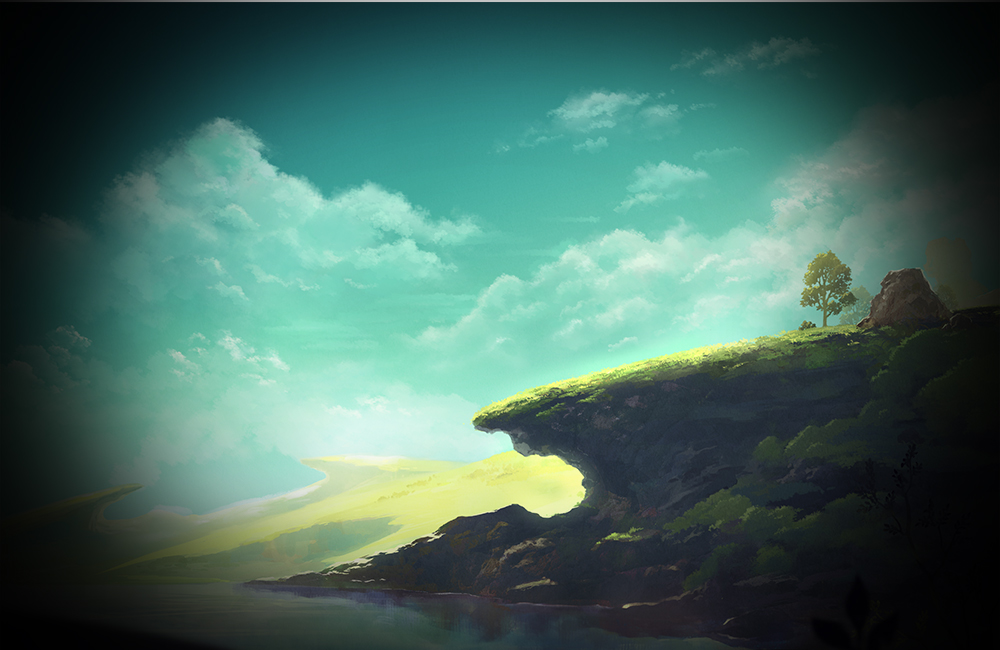

About the Page

Three things should have RPG players in good spirits. One is a swell of new interest in tabletop roleplaying, which I've observed anecdotally in my friends and family, in the 17 million views for Geek & Sundry's Critical Role, and in effusive mainstream reports from the past two years—and that's good for PC RPGs, acclimatizing players to the standards and idiosyncrasies of roleplaying and generating a hunger for the creativity and complexity offered by dice and a DM. Two, indie games in the PC RPG tradition, such as Divinity: Original Sin 2, Pillars of Eternity, Torment: Tides of Numenera, Wasteland 2, and Tyranny, are finding success in this new age of crowdfunding. And three, there's been a dramatic increase in the volume and quality of Japanese games on PC, with Nier: Automata last year and Final Fantasy XV, Ni no Kuni 2: Revenant Kingdom, the Secret of Mana remake, and Shenmue 3 promised this year.
In 2018, these three trends combine for a sweet Neapolitan ice cream of RPGs: D&D and Pathfinder-inspired dungeon crawlers, elaborate open worlds, and dramatic JRPG epics. Below are the five RPGs I'm personally most excited for this year, followed by, oh, 20-something more we're all looking forward to playing in the next 12 months. There'll be no shortage.